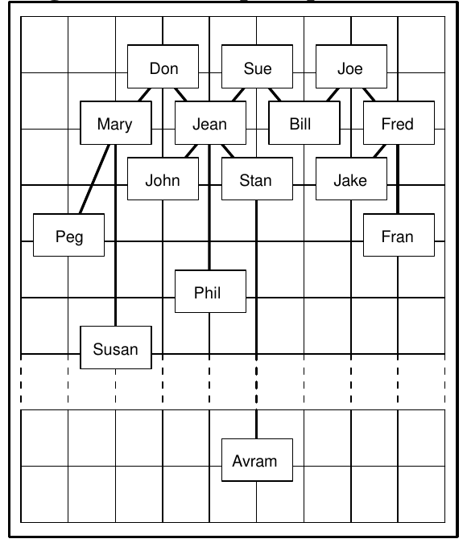

1993 ACM International Collegiate Programming Contest Finals · Problem C
The Oxford English Dictionary defines cousin as follows:
cousin (ku• zn), n. (Also first cousin) child of one’s uncle or aunt; my second (third…) cousin, my parent’s first (second…) cousin’s child; my first cousin once (twice…) removed, my first cousin’s child (grandchild…), also my parent’s (grandparent’s…) first cousin.
Put more precisely, any two persons whose closest common ancestor is (m+1) generations away from one person and (m+1)+n generations away from the other are mth cousins nce removed. Normally, m ≥ 1 and n ≥ 0, but being used to computers counting from 0, in this problem we require m ≥ 0 and n ≥ 0. This extends the normal definition so that siblings are zeroth cousins. We write such a relationship as cousin-m-n.
If one of the persons is an ancestor of the other, p generations away where p ≥ 1, they have a relationship descendant-p.
A relationship cousin-m₁-n₁ is closer than a relationship cousin-m₂-n₂ if m₁ < m₂ or (m₁ = m₂ and n₁ < n₂). A relationship descendant-p₁ is closer than a relationship descendant-p₂ if p₁ < p₂. A descendant-p relationship is always closer than a cousin-m-n relationship.
Write a program that accepts definitions of simple relationships between individuals and displays the closest cousin or descendant relationship, if any, which exists between arbitrary pairs of individuals.
Each line in the input begins with one of the characters ‘#’, ‘R’, ‘F’ or ‘E’.
‘#’ lines are comments. Ignore them.
‘R’ lines direct your program to record a relationship between two different individuals. The first 5 characters following the ‘R’ constitute the name of the first person; the next 5 characters constitute the name of the second. Case is significant. Following the names, possibly separated from them by blanks, is a non-negative integer, k, defining the relationship. If k is 0, then the named individuals are siblings. If k is 1, then the first named person is a child of the second. If k is 2, then the first named person is a grandchild of the second, and so forth. Ignore anything on the line following the integer.
‘F’ lines are queries; your program is to find the closest relationship, if any, which exists between the two different persons whose 5 character names follow the ‘F’. Ignore anything on the line following the second name. A query should be answered only with regard to ‘R’ lines which precede the query in the input.
There will be one ‘E’ line to mark the end of the input data. Ignore anything on or after the ‘E’ line.
For each ‘F’ line, your program is to report the closest relationship that exists between the two persons named aaaaa and bbbbb in one of the following formats:
aaaaa and bbbbb are descendant-p. aaaaa and bbbbb are cousin-m-n.
with m, n and p replaced by integers calculated as defined above. If no relationship exists between the pair, your program is to output the following:
aaaaa and bbbbb are not related.
Assumption:
A person is not an ancestor of himself/herself.
# A Comment! RFred Joe 1 Fred is Joe’s son RFran Fred 2 RJake Fred 1 RBill Joe 1 RBill Sue 1 RJean Sue 1 RJean Don 1 RPhil Jean 3 RStan Jean 1 RJohn Jean 1 RMary Don 1 RSusanMary 4 RPeg Mary 2 FFred Joe FJean Jake FPhil Bill FPhil Susan FJake Bill FDon Sue FStan John FPeg John FJean Susan FFran Peg FJohn Avram RAvramStan 99 FJohn Avram FAvramPhil E
Fred and Joe are descendant-1. Jean and Jake are not related. Phil and Bill are cousin-0-3. Phil and Susan are cousin-3-1. Jake and Bill are cousin-0-1. Don and Sue are not related. Stan and John are cousin-0-0. Peg and John are cousin-1-1. Jean and Susan are cousin-0-4. Fran and Peg are not related. John and Avram are not related. John and Avram are cousin-0-99. Avram and Phil are cousin-2-97.
